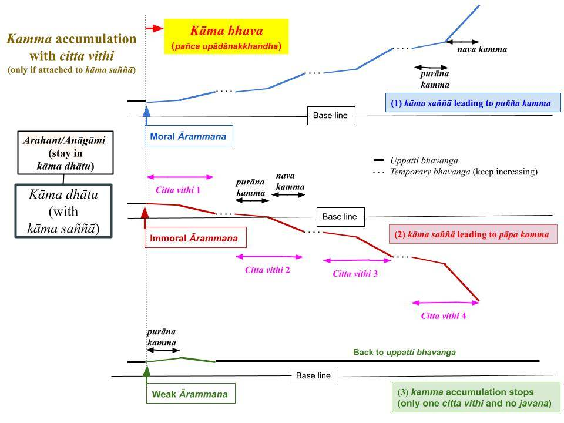

"Saññānidānā hi papañcasaṅkhā" verse captures the root cause for defilements to arise in mind. The "built-in distorted saññā" is why it is so hard to eliminate the tendency to crave sensual pleasures.
January 26, 2024; revised March 16, 2025
Previously Unheard Teachings of a Buddha
1. The Buddha called saññā a mirage in the “Pheṇapiṇḍūpama Sutta (SN 22.95),” and we discussed that in the posts “Sotapanna Stage and Distorted/Defiled Saññā” and "Fooled by Distorted Saññā (Sañjānāti) – Origin of Attachment (Taṇhā)."
- Here, we will discuss another critical sutta with the above verse to provide evidence that the "sweetness of sugar" or the "beauty of a woman" is a "mirage" created in the human mind by the "distorted saññā" built into our biological bodies. Those are not vedanā but "made-up saññā." However, "distorted saññā" leads to "mind-made vedanā" or "samphassa-jā-vedanā," i.e., becoming joyful or unhappy depending on the sensory input.
- The physical and mental bodies of any living being arise via kammic energy (also called uppatti bhava), which gives rise to that existence. That happens via the "bhava paccaya jāti" step in the Uppatti Paṭicca Samuppāda.
- That is the "previously unheard teachings of a Buddha."
Jāti (With a Physical Body) Dictated by Paṭicca Samuppāda
2. The "bhava paccaya jāti" step in the Uppatti Paṭicca Samuppāda came about starting with attachment to similar sensory stimulations ("avijjā paccayā saṅkhāra.") Attachment to certain stimulations ("paṭi icca") leads to "births to provide matching experiences" (sama uppāda); see "Paṭicca Samuppāda – “Pati+ichcha”+“Sama+uppāda.”
- A pig's birth is based on the lowly deeds (kamma) done with "avijjā paccayā saṅkhāra." A lion's birth is based on vicious deeds.
- Thus, the "sweetness of sugar" or the "beauty of a woman" would not arise in a pig or a lion. A pig's mind craves garbage for food. A lion does not crave sugar or garbage but the flesh of other animals. For details, see "Gati to Bhava to Jāti – Ours to Control" and "Gati (Habits/Character) Determine Births – Saṃsappanīya Sutta."
- Human births are based on "good/moral gati" but mixed with kāma rāga (tendency to value sensory pleasures.) The "sweetness of sugar" or the "beauty of a woman" is unavoidable for anyone born with a human body; the Buddha experienced them, too. Thus, even an Arahant born a human would generate that "distorted saññā" (unless in a jhāna or samāpatti.)
- However, if people fully understand how that "distorted saññā" arises, their minds will no longer be fooled. That is what Bāhiya Dārucīriya (amazingly) understood when the Buddha only told him to realize "diṭṭhe diṭṭhamattaṁ bhavissati, sute sutamattaṁ bhavissati, mute mutamattaṁ bhavissati, viññāte viññātamattaṁ bhavissatī’ti." That means, "‘Don't go beyond what is seen, heard, experienced by the tongue, nose, body or with the mind." Ven. Bāhiya understood that anything that appears "mind-pleasing" is not a truthful depiction of reality. See "Bāhiya Sutta (Ud 1.10);" English translations are always inadequate because the translator does not understand the deeper meaning.
A Mind Always Falls on One of the Three "Lokās/Dhātus"
3. When not receiving sensory input via any of the six senses, the mind is in the "uppatti bhavaṅga state." That is the "mindset" that one is born with. Since a human birth results from "good kamma vipāka," that state of any human is positive. Only those in the apāyās (four lowest realms) have "negative" or "bad" uppatti bhavaṅga states.
- While in the uppatti bhavaṅga state, the mind is inactive, and no javana cittās arise. When an ārammaṇa is received via any of the six senses, the mind breaks away from that uppatti bhavaṅga state and focuses on the ārammaṇa, i.e., becomes active.
- This is analogous to a car being "in neutral" and starting to move only when it is put into a gear. While in the neutral gear, the car is "alive" but not engaged in moving.
- A human will NOT lose that "uppatti bhavaṅga state" until the end of human existence. Thus, an Arahant born a human will also have the mind in that "uppatti bhavaṅga state" unless in a jhāna or samāpatti.
4. Upon receiving an ārammaṇa, a human mind will "break away" from the "uppatti bhavaṅga state" and will first fall on the "kāma dhātu" stage corresponding to human bhava. It will automatically receive the "kāma saññā" associated with the "human bhava." That includes "distorted saññā" of "sweetness in sugar," "beauty of a woman," or "stench of feces."
- In contrast, a pig would receive a "distorted saññā" of an "attractive smell" with a pile of feces. In reality, feces is made of suddhāṭṭhaka (atoms and molecules in the language of modern science) and would not have "good or bad" qualities. This is a more profound point requiring in-depth contemplation.
- We are thrilled to watch a magic show where the magician performs "unbelievable actions." But the magician always uses a "trick. " Once that trick is discovered, there is no "thrill in watching the magic show."
- "Distorted saññā" is the best magic trick in the world. Nature itself is the magician. It is so good that no one but a Buddha can discover it. Since our physical bodies are built to provide that "distorted saññā," no matter how many investigations are done (based on mundane techniques, including scientific experiments) to uncover the trick, they will all fail.
- It requires a "paradigm shift" to see how that trick is performed. The Buddha described how kamma done with particular "gati" led to births with corresponding "distorted saññā," as explained in #2 above. That is the "previously unheard teachings of a Buddha."
"Saññānidānā hi papañcasaṅkhā"
5. As we proceed, I will discuss several critical suttās on "distorted saññā." The above verse appears in the "Kalahavivāda Sutta (Snp 4.11)." The full verse is:
“Na saññasaññī na visaññasaññī, Nopi asaññī na vibhūtasaññī; Evaṁ sametassa vibhoti rūpaṁ, Saññānidānā hi papañcasaṅkhā”.
- In the Tipitaka, words are combined to compress the lines of text. If we expand the verse:
“Na sañña saññī na visañña saññī, Nopi asaññī na vibhūta saññī; Evaṁ sametassa vibhoti rūpaṁ, Saññā nidānā hi papañca saṅkhā”.
- As we discussed, accumulation to pañcupādānakkhandha/pañca upādānakkhandha (or "loka samudaya" according to the Buddha; see "Loka Sutta – Origin and Cessation of the World" and "Sensory Inputs Initiate “Creation of the World” or 'Loka Samudaya'”) happens with the generation of "akusala accumulation" (papañca saṅkhā) in the "nava kamma" stage. But that process starts with the "saṅkappa generation" based on "distorted saññā" in the "purāna kamma" stage. See "Purāna and Nava Kamma – Sequence of Kamma Generation."
- But let us first look at the next verse that mentions various types of saññā.
6. "Evaṁ sametassa vibhoti rūpaṁ" means "once one comprehends the true nature of saññā, mind-made rupās stop arising in mind." In other words, akusala accumulation via "giving priority to immoral or papañca" (papañca saṅkhā) has origins (nidāna) in saññā, which refers to the "distorted saññā." Now, let us look at the first part of the verse.
- “Na sañña saññī" means one cannot grasp the truth with the "naturally built-in distorted saññā." However, one cannot sort it out without that "distorted saññā" being experienced either (for example, if one is an ummattakā or "gone mad"), and that is what "na visañña saññī" means.
- For example, one cannot sort it out by losing saññā altogether and becoming "asañña." We know that those who cultivate "asañña saññā" techniques ("asañña Bhāvanā") end up in the "asaññā realm" where saññā does not arise. Such an "asañña saññā" state is when one becomes unconscious; while unconscious, saññā of any kind cannot arise because no cittās arise.
- Next, "na vibhūta saññī" means one cannot be without "(distorted) saññā" to grasp the truth, i.e., when in an arūpa samāpattī. These descriptions are in the "Kalahavivāda sutta niddesa."
- The true nature of the "distorted saññā" we experience is discussed in the "Mūlapariyāya Sutta – The Root of All Things." As the sutta's name implies, grasping this "root of all things" is the key to stopping papañca saṅkhā from arising. Also see "Fooled by Distorted Saññā (Sañjānāti) – Origin of Attachment (Taṇhā)."
- The "distorted saññā" includes "subha and patigha saññā" which need to be overcome (by understanding their origin) via Satipaṭṭhāna after going through the "jānato and passato" stages.
"Distorted Saññā" Remains with a Living Arahant
7. Arahanthood is attained while experiencing the "distorted saññā" but understanding with wisdom how it arises. The key is to understand how that "distorted saññā, " the "mirage," or the "trick," is done. It is created by our own minds when we go through the Paṭicca Samuppāda process with avijjā and create future uppatti (bhava and jāti.) That rebirth (jāti) will automatically present that mirage or the "distorted saññā."
- It is a vicious circle that keeps the rebirth process repeating perpetually UNTIL the "trick" is heard (jānato) and fully comprehended (passato.)
- Note that the ideal saññā (without "distorted saññā") is the saññā that arises only in a "pabhassara citta." An Arahant in "Arahant phala samadhi" experiences that "pure citta." That "pabhassara citta" is first experienced at the Arahant phala moment.
- On the other hand, an Arahant, while engaged with "kāma dhātu," experiences "cittās with kāma saññā" as we discussed. Furthermore, an Arahant in a jhāna or samāpatti experiences cittās with "rupa saññā" ("jhānic pleasures") and "arupa saññā" ("samāpatti pleasures") respectively, but their minds do not attach to them either. See "Loka and Nibbāna (Aloka) – Complete Overview ."
Arahants Experience the "Distorted Saññā" - Tipiṭaka Evidence
8. The "Nibbānadhātu Sutta (Iti 44)" describes a living Arahant as "Tassa tiṭṭhanteva pañcindriyāni yesaṁ avighātattā manāpāmanāpaṁ paccanubhoti, sukhadukkhaṁ paṭisaṁvedeti. Tassa yo rāgakkhayo, dosakkhayo, mohakkhayo—ayaṁ vuccati, bhikkhave, saupādisesā nibbānadhātu."
Translated: "Their five sensory faculties remain. So long as their sensory faculties operate, they continue to experience the agreeable/disagreeable and to feel bodily pleasure/pain. The ending of greed, hate, and delusion in them—is called the element of nibbāna with something left over." Here, "what is left over" is their physical body with the sensory faculties.
- Here, "agreeable and disagreeable" refers to the two main types of "distorted saññā": subha saññā for "mind-pleasing experiences" and "patigha saññā" for "disliked experiences." As we have discussed, they experience, for example, the "sweetness of sugar" or the "bad odor of rotten meat."
- The key point is that their minds do not even go through the "purāna kamma" stage (unlike in a puthujjana) automatically. Thus, no further additions to pañcupādānakkhandha will not happen for an Arahant.
- Even the Buddha experienced the "distorted saññā" because he was born with a human body. When describing various "characteristics of the Buddha," the "Brahmāyu Sutta (MN 91)" states, "Rasapaṭisaṁvedī kho pana so bhavaṁ gotamo āhāraṁ āhāreti, no ca rasarāgapaṭisaṁvedī" OR "He eats experiencing the taste, but without experiencing attachment for the taste."
- For details, see #9 in "Sandiṭṭhiko – What Does It Mean?".
Attachment to "Distorted Saññā" Initiates Kamma Accumulation
9. Therefore, anyone born with a human body will experience the "distorted Saññā." But the mind of a Buddha or an Arahant will not be fooled by it. They fully understand it is a "magic show."
- The mind of anyone with kāma raga anusaya/samyojana will automatically attach to any ārammaṇa and the "upaya stage" or the "purāna kamma" stage is launched. No kamma accumulation happens in this FIRST stage because no javana cittas arise. This process happens subconsciously, without our awareness.
- However, if the mind becomes interested in the ārammaṇa, it gets into the "upādāna stage" or the "nava kamma" stage. That is the SECOND stage. Kamma accumulation with javana cittas happens in this SECOND stage. This process happens consciously, where we engage in vaci and kāya saṅkhāra (i.e., generate vaci and kāya kamma.)
- The upaya and upādāna stages were discussed in "Upaya and Upādāna – Two Stages of Attachment." The alternative way of explaining the same process is to call them the "purāna kamma" and "nava kamma" stages. That discussion is in "Purāna and Nava Kamma – Sequence of Kamma Generation."
- Those alternative terminologies appear in different suttās. It is good to be aware of the nomenclature.
Transition to the Second Stage
10. Transition to kamma accumulation or "nava kamma" stage happens if we generate kāma guṇa for that ārammaṇa. That means the sensory input (ārammaṇa) is strong enough to convince the mind to pursue it. That is illustrated in the following chart (and also that Arahants and Anāgāmis minds stop at the kāma dhātu stage with kāma saññā.) Kamma accumulation, once started with the first citta vithi, will continue until either (i) a strong kamma is done with vaci/kāya saṅkhāra), or (ii) one mindfully stops the "nava kamma" stage close to the beginning.

Download/Print: "Kamma accumulation with citta vithi"
- If the ārammaṇa is not strong enough to trigger kāma guṇa (and generate kāmacchanda), then javana citta will not arise in the first citta vithi; thus, no "nava kamma" will be done. Furthermore, no more citta vithi will arise, as shown in the chart above. That is the case for most sensory inputs that go through our minds daily. We attach only to a small fraction.
- See "Kāma Guṇa – Origin of Attachment (Tanhā)" for details on how kāma guṇa arise in the mind.
- Obviously, kāma guṇa does not arise in the mind of an Arahant.